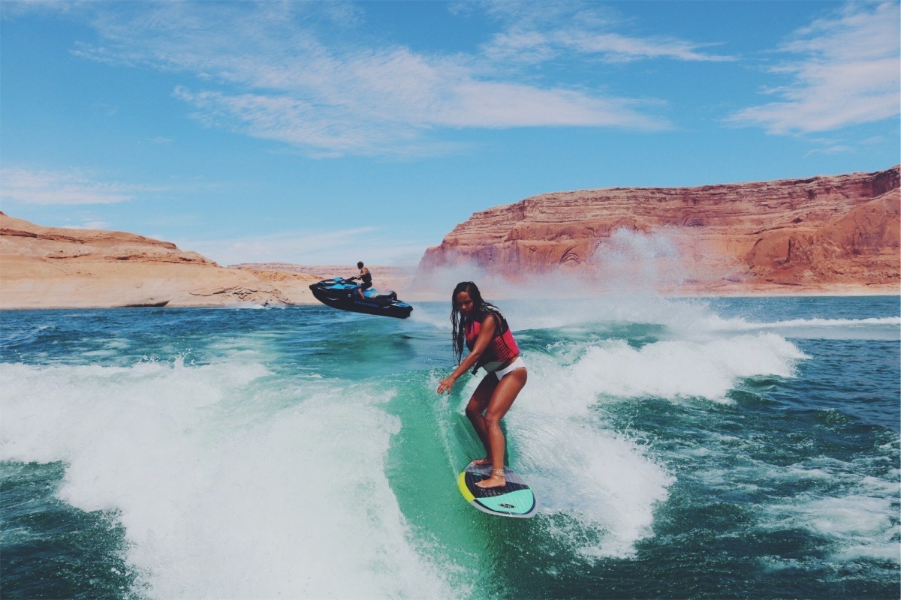
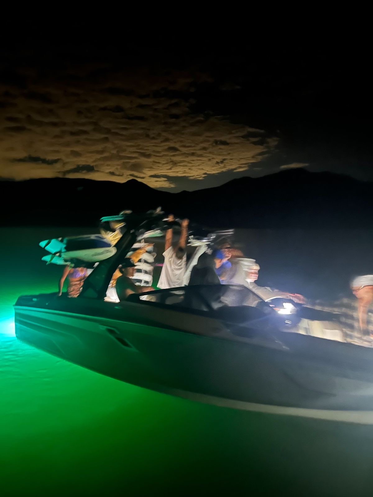
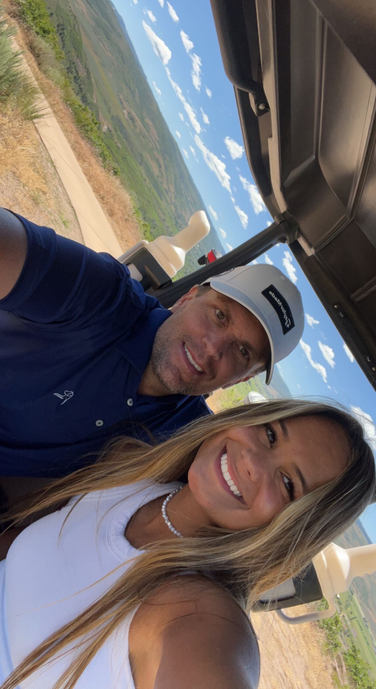

My Personal Life

Hi, my name is Isabelle Kallas, but my friends call me Izzy. I am 21 years old and I am from El Dorado Hills, CA. I spend most of my free time outdoors in the sun. When I am not working or studying, I am always spending time with my frineds and family.
Boating
 I grew up 5 minutes from Folsom Lake in California. My family loves to get together on an afternoon and go boating on the lake. I love to wake surf behind the boat. My family goes to Lake Powell every summer and it is by far my favorite place to go boating!
Golf
I started playing golf in high school to spend time with my brothers and dad. Although I am not at their skill level, I have found to love the sport. Golf takes patience and practice. It is very difficult, but I know that when I have a good attitude I always have a fun time playing.
Why Finance?
I am currently in my 4th year at Brigham Young University, and I am majoring in finance and minoring in microbiology.
I started off my college education thinking I was going to school to become a doctor. I spent the past 3 years taking rigorous premed courses and received 2 academic scholarships for my efforts. Last year, I spent the summer doing an internship at Trust Implants Oral Surgery in Newport Beach. Initially, I took the internship to shadow the doctors during surgery, however, during my time there they asked me to allocate some of my work towards improving their marketing strategy. I developed social media marketing tools and campaigns to help drive increased sales and bookings.
I wanted to become a doctor to help other people. While I still have that same desire, I have realized that my pursuit was more about finding a way to serve others and less of a genuine interest to work in an operating room. When I made this realization, I decided to pivot and explore other careers. During this time, I leaned heavily upon the support of my older brother who works in private equity, and he strongly encouraged me to look into the world of finance.
I have been particularly drawn to venture capital, and I am fascinated with the idea of investing in people and enabling them with the necessary resources to drive innovation. I want to work as a venture capitalist in the healthcare space. I want to work with founders that are changing the world and help decide which projects are worth funding. I want to specialize in healthcare because I believe many of the innovations within the healthcare space will have a sizable impact on the health and well being of many others. I believe my previous coursework in microbiology will help me differentiate myself and bring a unique perspective into the classrooms and workplaces I find myself in.